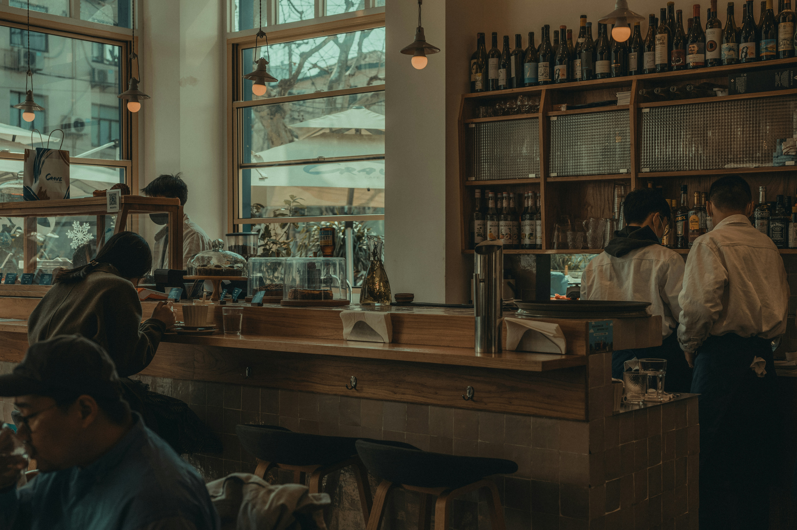

Dobra kawa, domowe śniadania i ciepłe dania w spokojnym wnętrzu. Wpadnij na chwilę lub zostań na dłużej.
Zobacz menu Jak nas znaleźćO nas
Kalina to miejsce na poranną kawę, spokojny lunch i popołudniowe ciasto. Gotujemy z prostych, sezonowych składników, a kawę parzymy ze starannie wybranych ziaren.
- Świeżo palona kawa
- Śniadania do późna
- Domowe ciasta i desery
- Opcje wegetariańskie i wegańskie
- Kawa i jedzenie na wynos
Kontakt
Kalina Bistro Caffe
ul. Przykładowa 12
00-000 Miasto
Telefon: +48 000 000 000
E-mail: kontakt@kalinabistro.pl
Facebook / Instagram: @kalinabistro
| Poniedziałek – piątek | 8:00 – 20:00 |
| Sobota | 9:00 – 21:00 |
| Niedziela | 10:00 – 18:00 |
Tutaj można wstawić mapę z lokalizacją lokalu